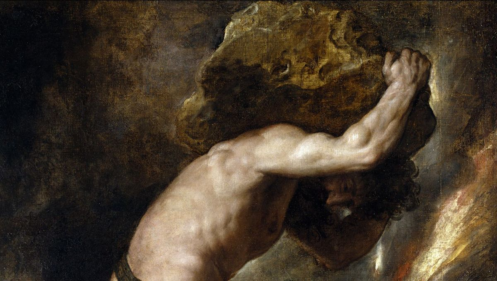

Sisyphe

Accueil
Histoire
Articles
Galerie
Documentation
Contact
Documentation
Sisyphe - Page Wikipédia
Sisyphe ou le sens de l'absurde - Radio France
Sisyphe, triste champion de l'immortalité - Cairn
Sisyphe : L'homme heureux qui rappelle Albert Camus - Le Figaro
"Il faut imaginer Sisyphe heureux" - Philosophie Magazine